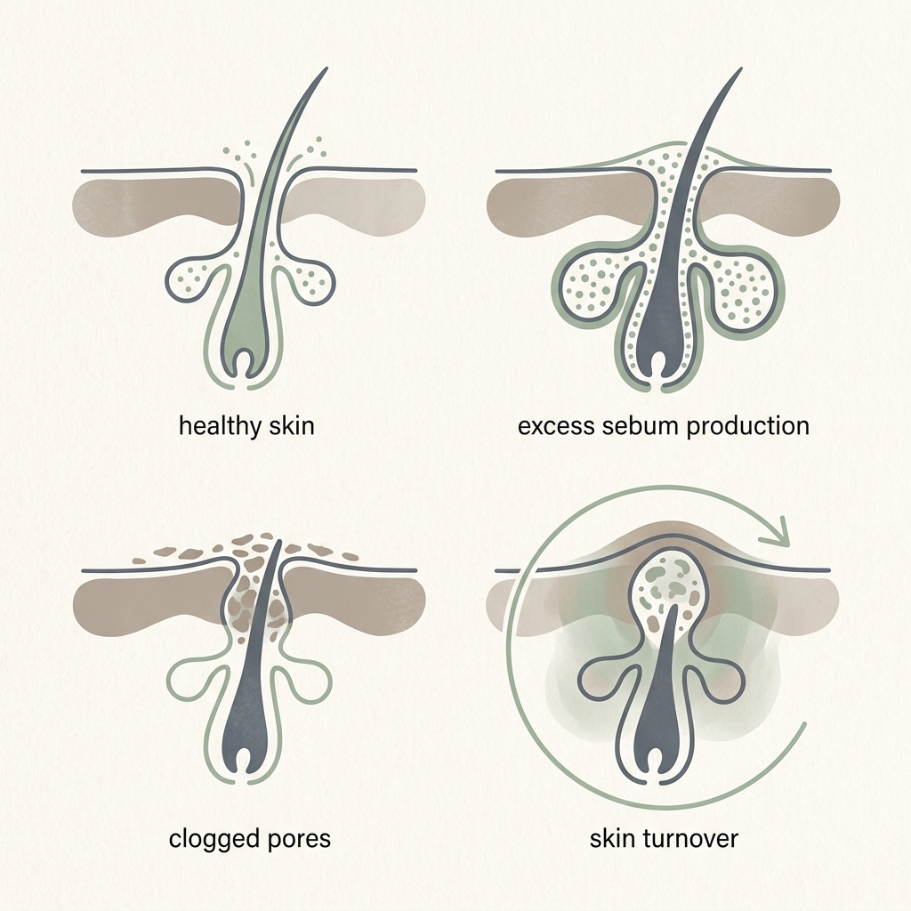
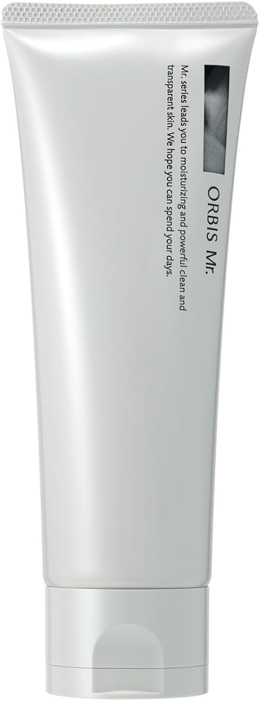
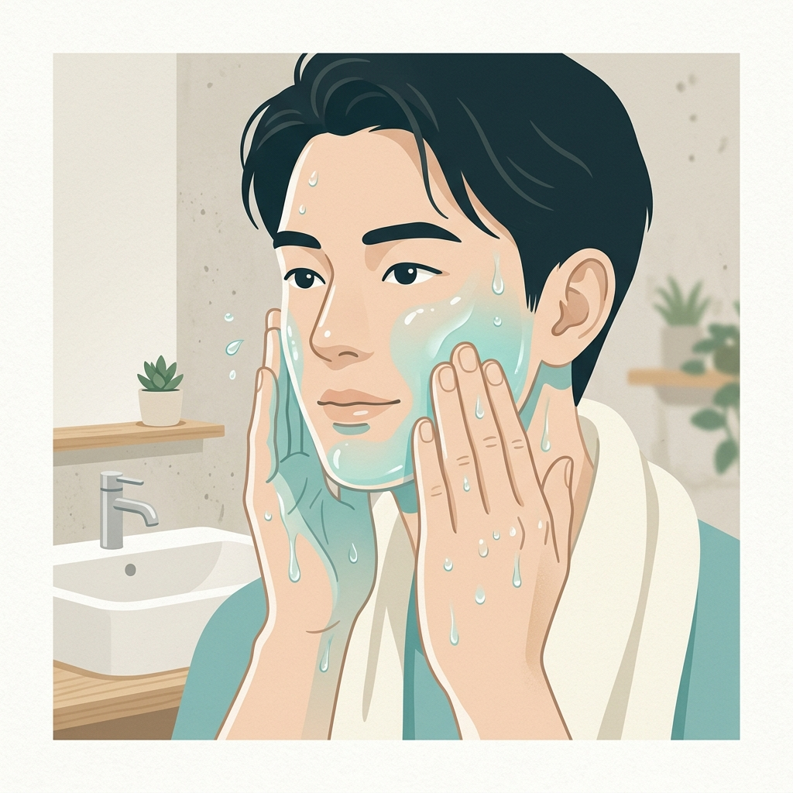
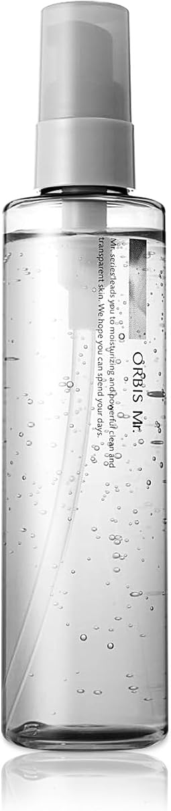
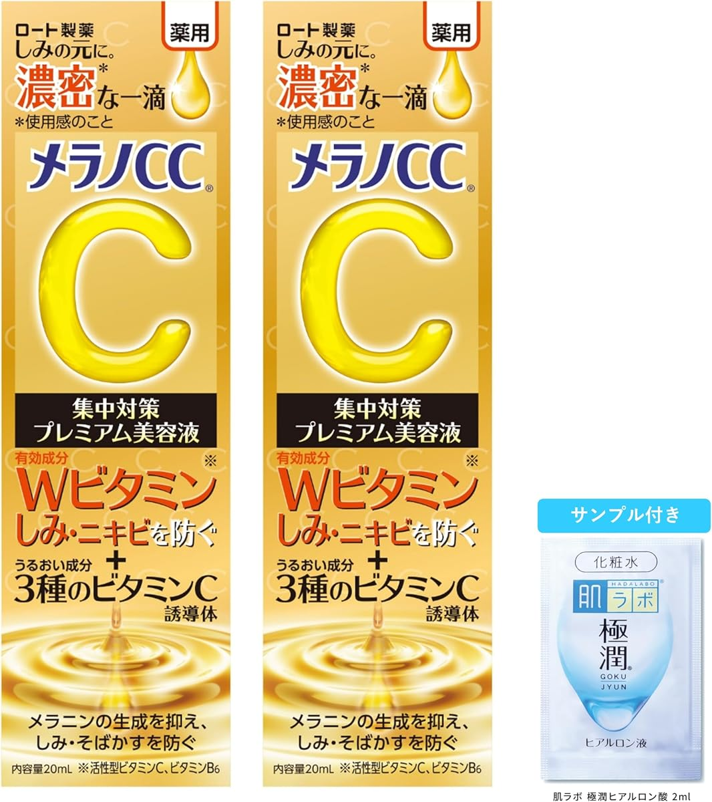
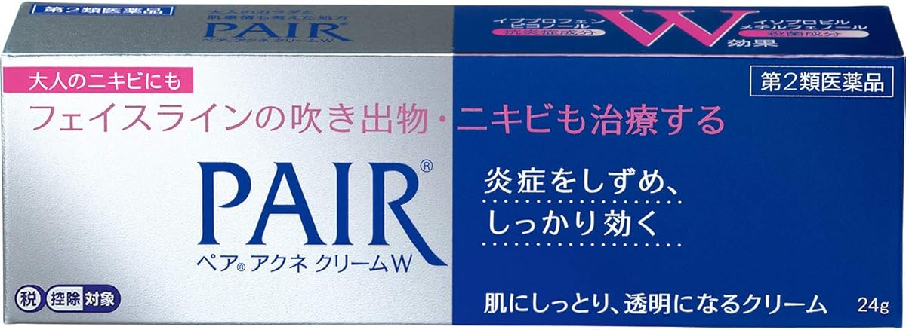

男性は女性の2倍の皮脂量。水分不足でバリア機能が落ち、
毛穴が詰まることでアクネ菌が爆発的に増殖します。

ゴシゴシ手でこする洗顔は絶対NG。
泡の力だけで、毛穴の奥の余分な皮脂と汚れを包み込みます。
医薬部外品。炭とモロッコ溶岩クレイをダブル配合。
頑固な汚れを吸着し、ニキビと肌荒れを根本から予防します。

化粧水で水分を届け、バリア機能を最適化。
肌を潤すことでターンオーバーを促し、皮脂の過剰分泌を抑えます。

医薬部外品・美容液一体型ローション。
これ1本で潤いをキープし、ベタつかない清潔なクリア肌へ。

活性型ビタミンC誘導体がダイレクトに浸透。
ニキビを予防しながら、気になる跡や黒ずみ毛穴をなめらかに。

すでにできてしまった赤ニキビにはこれ。
W有効成分で炎症を鎮め、アクネ菌を強力に殺菌・治療します。

指先の雑菌や刺激は、深刻なクレーター跡の元。
長引く炎症や繰り返す場合は迷わず皮膚科を受診しましょう。